Apple Watch
MedicLog on your wrist — timers, quick entry, voice, and your full call log without touching your phone.
Starting a Call
Open MedicLog on your Watch to see your phone's connection status and quickly start a call from your wrist.
Wrist Launch
The green Online indicator confirms your Watch is connected to your phone's MedicLog session. Tap Start Call to begin a new call directly from your Watch.
Once a call is active on either device, the Watch automatically transitions to the home ring view and begins syncing entries.
How the Watch Works
The Watch app is organized around a single gesture model. From the home screen, swipe in any direction to reach what you need — no menus, no back buttons.
The Gravity Stack
Live timers rise above the home screen — the most urgent (closest to expiring) sits nearest home, with less urgent timers floating higher. Below, expired timers sink by how long they've been gone: most recently expired sits nearest home, progressing to LATE, then OVER at the bottom. Active timers float up. Expired timers fall.
swipe right
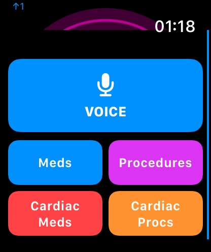
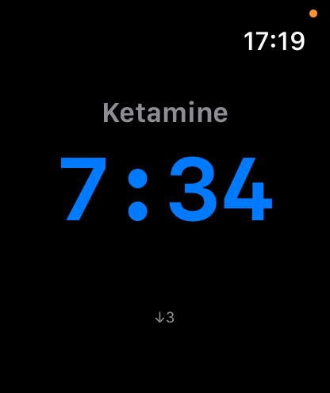
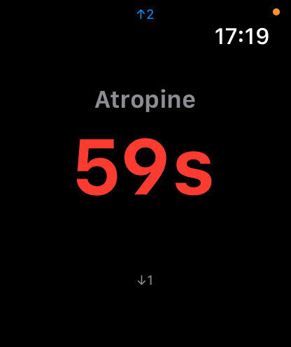
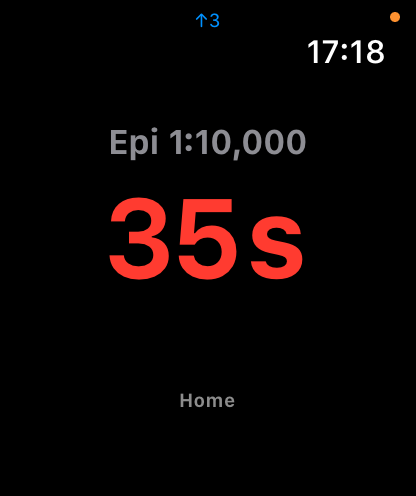
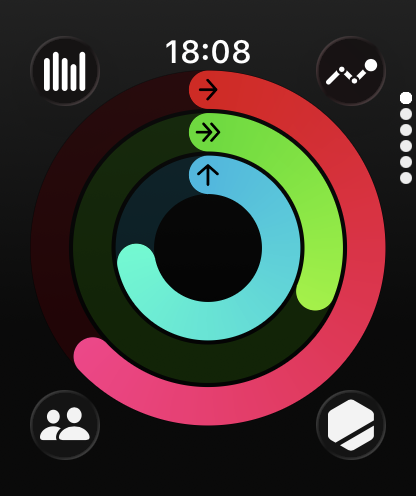
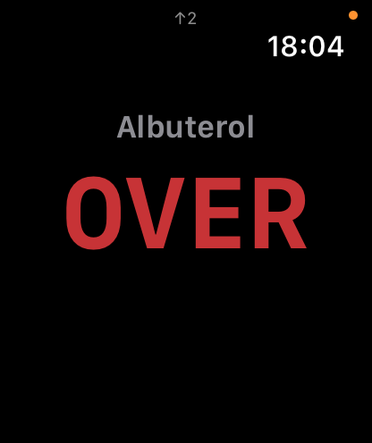
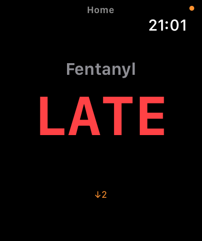
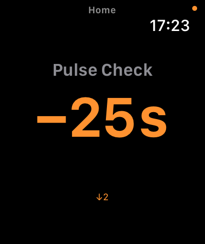
swipe left
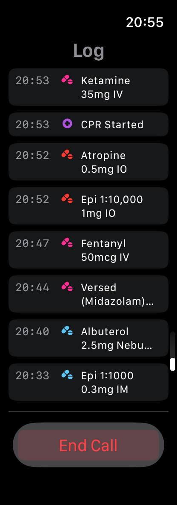
Home Screen — The Ring View
All active medication and procedure timers appear as concentric colored rings. Each ring is a running timer — color-coded to match the medication's category. The most urgent timer is the outermost ring — full size, full opacity. Each subsequent ring is smaller and more faded toward the center.
At a Glance
The ring view shows every active timer simultaneously — no scrolling required. Color matches what you configured for each medication. The outermost ring is your highest-priority timer; rings fade smaller and dimmer toward the center as urgency decreases.
Active timer names appear in the upper left. The current time appears top right.
Swipe in any direction to navigate: down for active overflow timers, up for expired timers, right for quick entry, left for the call log.
Quick Entry
One-tap logging directly from your wrist. Swipe right from the home screen to reach the quick entry grid.
One Tap to Log
Large, glove-safe buttons for the most common interventions: Meds, Procedures, Cardiac Meds, Cardiac Procedures — and Voice for anything else.
Each entry logs instantly to your phone's call record and syncs to the active session. No phone needed.
The arc at the top of the screen indicates the gravity stack — showing you have active timers above.
Voice Log
Raise your wrist and speak. MedicLog transcribes your entry on the phone and adds it to the call record.
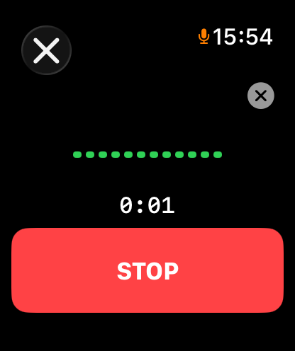
Hands-Free Entry
Tap Voice from the quick entry grid. The green dots show live audio activity — speak naturally. Tap Stop when done, or it stops automatically after a moment of silence.
The orange microphone in the status bar confirms the mic is active.
MedicLog parses your speech on the phone — medications, doses, routes, vitals — and prompts you to confirm before logging. Common entries auto-confirm immediately.
Medication Timers
Every timed medication gets a dedicated timer screen. Swipe down for active timers, up for expired — navigating the gravity stack in either direction.
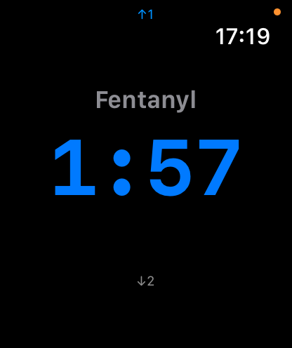
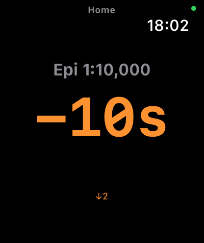
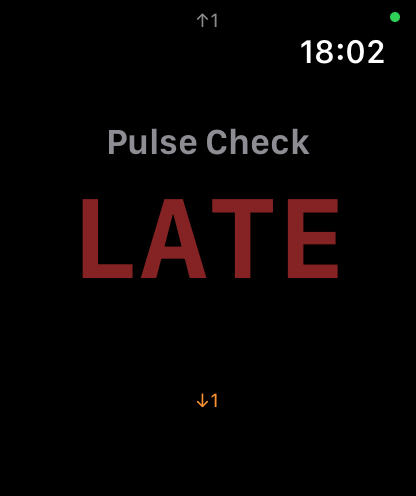
Timers cycle through four states: counting (time remaining, red when urgent), overdue (negative elapsed, orange), late (significantly past the repeat interval), and over (interval fully elapsed, red). A haptic alerts you at each transition.
The up/down arrows in the corner show your position in the gravity stack — how many timers are above or below the one you're viewing.
Shake to dismiss an expired timer from your wrist. Dismissing from the phone is authoritative and syncs to the Watch.
Call Log
Your full call timeline on your wrist. Swipe left from the home screen to browse everything logged this call.
Full Timeline
Every entry — vitals, medications, procedures, notes, dispatch — appears in reverse chronological order with timestamps. Icon indicators mark each entry type.
The log syncs from the phone in real time. Entries your partner logs on their device appear here immediately.
Useful for quick reference during handoff, or to verify what was given and when without unlocking your phone.